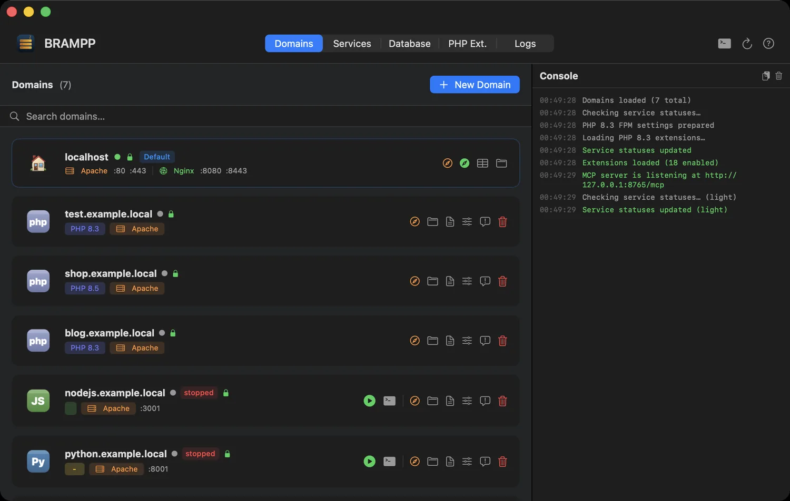
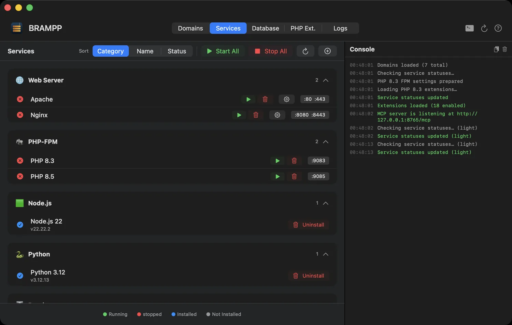
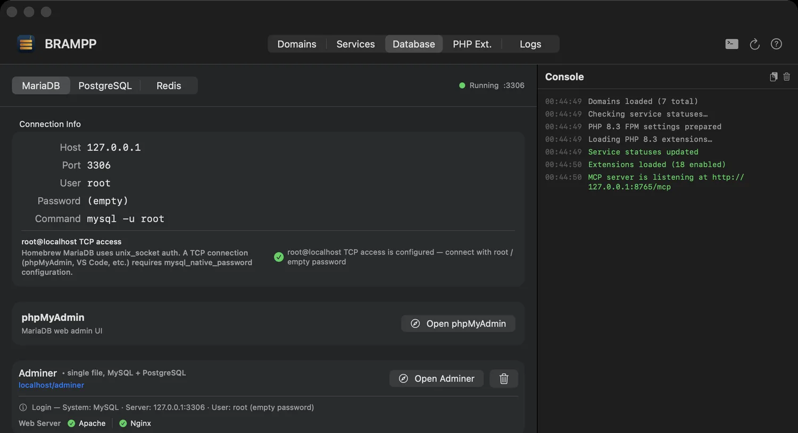
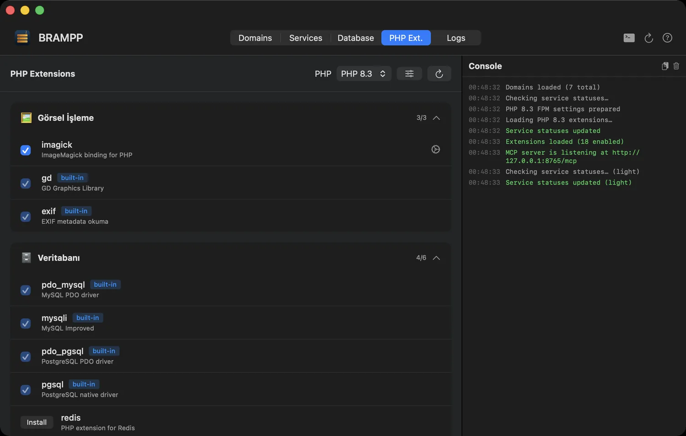
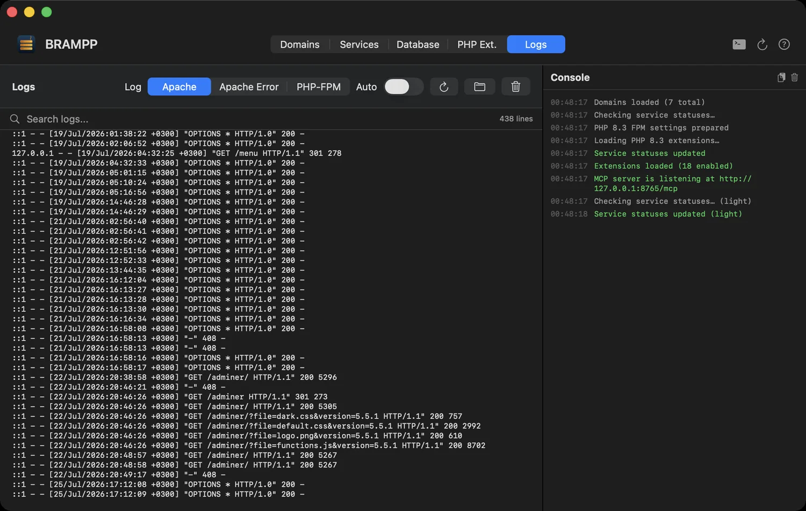
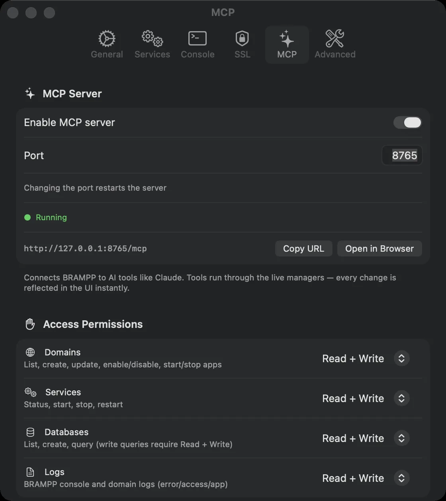

BRAMPP The Homebrew-native macOS development platform
One native app driving the Homebrew services you already have — local domains, automatic HTTPS, databases, app servers, and a temporary public address when you need to show someone. No bundled binaries, no second copy of anything.
Free · MIT · macOS 14+ · Apple Silicon

Every local site in one list — platform, PHP version, web server, SSL and live state.
Your Mac already has a stack. Use it.
The whole idea fits in two paragraphs.
XAMPP and MAMP bring their own copies
They install a second Apache, a second PHP and a second MySQL next to the Homebrew stack you use from the terminal. Two web servers, two php.ini files, two data folders — and still only one port 80.
BRAMPP drives the services you installed
It ships no server binaries at all and manages the same httpd, php and mariadb you got from brew, taking over the tedious parts: virtual hosts, /etc/hosts entries, local certificates and database chores.
How it stacks up
Bundled binaries versus your own Homebrew services — the short version.
Against XAMPP / MAMP
| Criterion | XAMPP / MAMP | BRAMPP |
|---|---|---|
| Server binaries | Bundled, sandboxed, duplicated | Your own Homebrew services |
| Platforms served | PHP and Perl | PHP, Node.js, Python, ASP.NET Core, static |
| Web servers | XAMPP: Apache · MAMP: Apache or Nginx | Apache and Nginx (even side by side) |
| Databases | XAMPP: MariaDB · MAMP: MySQL | MariaDB/MySQL, PostgreSQL, Redis |
| Local HTTPS | Manual pain | Automatic via mkcert |
brew upgrade friendly | Not really | That's the whole point |
| AI assistant access | — | Built-in MCP server, 23 tools |
| End-to-end arm64 | Varies by product and installer | The app and every service it manages, natively |
| Price | XAMPP free · MAMP PRO paid | Free, MIT, open source |
What you get
Six of them. Each one is something you would otherwise do by hand, in a config file, at 1 a.m. — the full list is on the features page.
Service control
Start, stop and restart Apache, Nginx, PHP-FPM 8.1–8.5, MariaDB, PostgreSQL and Redis. Live status with port checks, crash notifications, auto-start of last-running services.
Local domains
myproject.test in seconds: virtual host, /etc/hosts entry, site folder and sample project generated for you. Apache or Nginx, per domain.
Every stack, one app
PHP with a per-domain version, Node.js, Python (FastAPI, Django, Flask with venv), ASP.NET Core, static sites and SPAs with history-mode fallback.
Real HTTPS locally
One-click mkcert integration: local certificate authority, per-domain certificates and HTTP→HTTPS redirect. The green padlock, at home.
Databases without the CLI
Create and drop databases, dump and restore, phpMyAdmin / Adminer installers, plus my.cnf, postgresql.conf and redis.conf editors with safe writes.
Native arm64, end to end
BRAMPP.app is a native Apple Silicon binary on macOS 14+, and so are the services it manages: httpd, php-fpm, mariadbd and redis-server all come from Homebrew's arm64 bottles. App and stack, native all the way down — no Rosetta, no emulation layer.
A tour of the app
Six tabs. No terminal required — but every command it runs is printed first.
localhost card shows both web servers' ports at a glance, and + New Domain sets up vhost, /etc/hosts, site folder and sample project in one step.

root@localhost TCP access is already configured and offers the one-click fix only when it's actually needed. Create, drop, dump and restore databases, and open phpMyAdmin or Adminer without remembering a URL.
php.ini quick settings — separately for 8.1 through 8.5.
tail -f gymnastics across five terminal tabs.
http://127.0.0.1:8765/mcp, loopback only, with per-area access permissions, a live count of the tools actually enabled, and one-click setup for Claude Desktop, ChatGPT Codex and the skill file.Running in 60 seconds
Requirements: macOS 14 Sonoma or newer, Apple Silicon, and Homebrew — the wizard helps you install Homebrew if it's missing.
- Download and drag. Grab
BRAMPP.dmgfrom Releases and drag BRAMPP.app to Applications. - Open it. The app is Developer ID signed and notarized by Apple, so macOS runs it without any extra step.
- Run the setup wizard. It configures Apache ports, PHP-FPM, the mkcert CA, localhost SSL, MariaDB root access and phpMyAdmin — installing only what you approve, showing every command in the console.
- Create your first domain. + New Domain → pick a name and platform → open
https://myproject.testin your browser.
Let your assistant drive the stack
Flip one switch in Settings and BRAMPP becomes a Model Context Protocol server. Your assistant can create a domain, start the services it needs and check the logs — while you watch the window update live.
Endpoint: http://127.0.0.1:8765/mcp — bound to loopback only, off by default, and SQL is read-only unless you explicitly allow writes.
Questions people actually ask
Nine answers, straight from the README.
Is this a XAMPP replacement for Mac?
Yes — that's the design goal. It covers the XAMPP/MAMP workflow and adds Nginx, PostgreSQL, Redis, Node.js, Python and ASP.NET Core. Unlike XAMPP it manages your existing Homebrew services instead of bundling binaries.
Will it fight my existing Homebrew setup?
No — it is your Homebrew setup. BRAMPP never installs a parallel copy of anything.
Is the app signed and notarized?
Yes. Releases are signed with a Developer ID Application certificate and notarized by Apple; the ticket is stapled to both the DMG and the app, so it verifies even if the first launch is offline. Run spctl -a -vvv -t exec /Applications/BRAMPP.app and you should see source=Notarized Developer ID. The project is fully open source — build it yourself if you prefer.
What asks for my password?
Only /etc/hosts edits (adding 127.0.0.1 myproject.test). Each operation asks separately and shows the exact command first.
Can BRAMPP run my Node.js / Python / ASP.NET app?
Yes — each app runs under a zero-dependency supervisor with auto-restart and combined logs, behind Apache or Nginx as a reverse proxy (WebSocket, SSE, HTTP/2 and gRPC options included). You can declare service dependencies (e.g. MariaDB + Redis) that start automatically first.
Which PHP versions are supported?
PHP 8.1, 8.2, 8.3, 8.4 and 8.5 side by side — each domain can pin its own version, and the extension manager works per version.
Which Macs does BRAMPP run on?
Apple Silicon only. The shipped build is a native arm64 binary and requires macOS 14 (Sonoma) or newer — Intel Macs are not supported. The Homebrew prefix (/opt/homebrew) is detected automatically.
Can AI tools like Claude control BRAMPP?
Yes — enable the built-in MCP server (Settings → MCP) and any MCP-capable client gets 23 tools: list/create/update domains, start/stop app servers, service status and start/stop/restart, read BRAMPP and per-domain logs, list/create databases, run read-only SQL, and dump & restore with mysqldump/pg_dump. Per-area permissions (Domains, Services, Databases, Logs, Sharing) let you grant no access, read or read + write — tools you disallow never appear to the client. It binds to 127.0.0.1 only and is off by default.
How do I uninstall?
Quit BRAMPP, delete the app and remove ~/Library/Application Support/BRAMPP. Your Homebrew services and site folders remain untouched.